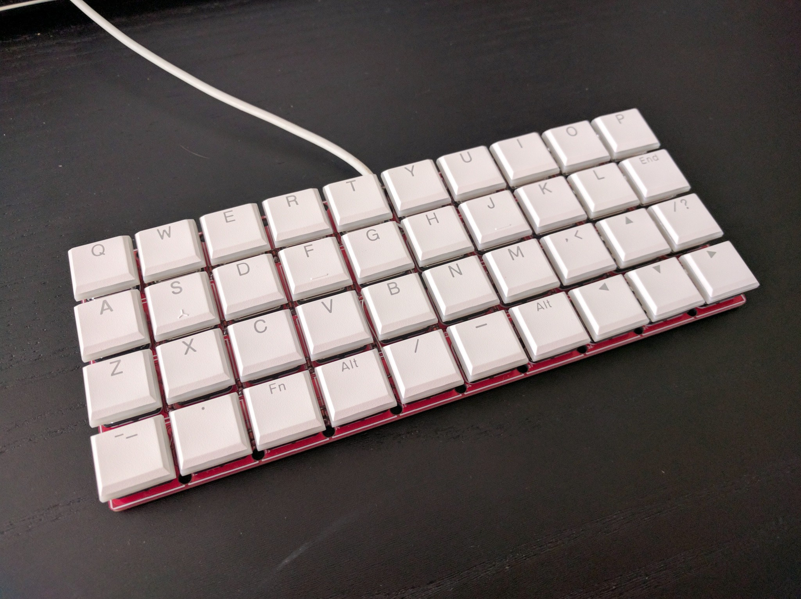

Done¶
Published on 2020-08-28 in Dorsch 40k Keyboard.
They switches and keycaps arrived while I was on vacation, but now I’m back and I assembled it all.
All switches nicely soldered, and straight:

Then I just inserted all the keycaps. Of course I had to be a little creative about the bottom row and the enter key, since those keys mostly didn’t come in 1u versions.
You would think that after adding the switches the code that I previously wrote would just work. Well, that would surely be something, but no — there were some inevitable minor bugs. Then, after fixing them I tried it for a bit, and decided to rearrange the keys a little bit to expose the more commonly used symbols better.
I’m still having a couple of problems. The Shift key is too low, and the backspace takes some getting used to. I also discovered why hold/tap is usually done with a timeout and not like I did it — I can’t use the modifier keys with mouse clicks as it is now. I will add a long timeout for that.